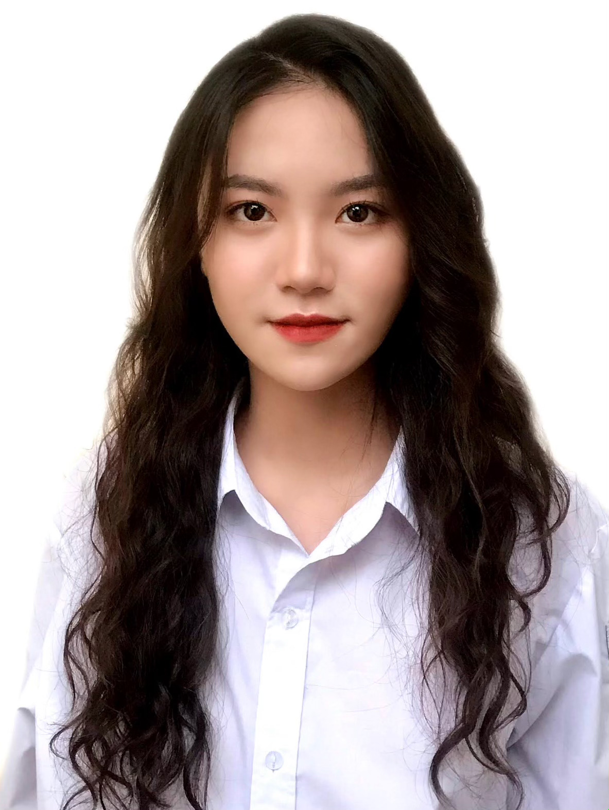

Danh sách trích ngang thành tích Cộng tác viên Liên chi Đoàn Khoa Đầu tư

Nguyễn Huyền My
Quản lý dự án 63
Ban Công tác Đoàn Hội & Phát triển Đảng
- Cuộc thi Bí thư Chi đoàn giỏi cấp Tỉnh 2021 và đạt giải Nhì- Đạt Danh hiệu "Thanh niên tiên tiến làm theo lời Bác" Năm 2021
- Tham gia Hội nghị lãnh đạo trẻ 2021 ( AIESEC VIETNAM)
- Tham gia làm CTV cho tổ chức Cyberschool dạy học cho trẻ em vùng cao
- Ủy viên Ban chấp hành Đoàn trường THPT Chuyên Hà Giang hai nhiệm kì.

Nguyễn Kiều Trang
Kinh tế đầu tư 63A
Ban Công tác Đoàn Hội & Phát triển Đảng
- Năm 2019: Nằm trong Ban Truyền Thông của dự án A little Bussiness For Teens (Dự án về Kinh doanh, kinh tế dành cho các bạn cùng lứa tuổi của em có cùng đam mê tìm hiểu về những vấn đề liên quan và cùng nhau học hỏi từ nhau)- Năm 2020: Đại diện cho cả trường tham gia cuộc thi lớn do Đài truyền hình tổ chức là Đường lên đỉnh Olympia
- Năm 2021: Làm CTV cho Ban Đối Ngoại dự án Tuổi trẻ sống không hối tiếc (một dự án lan tỏa thông tin về những chương trình thiện nguyện cho các bạn trẻ và sinh viên)

Nguyễn Thu Trang
Kinh tế đầu tư 63A
Ban Công tác Đoàn Hội & Phát triển Đảng
Bí thư chi đoàn cấp 3Tổ chức, hướng dẫn và giúp đỡ chi đoàn của mình tham gia các hoạt động nhân dịp 20/11, 26/3,..; các cuộc thi do Đoàn trường tổ chức như :"Ẩm thực Việt Nam", "Chào Tết",...; các cuộc thi trực tuyến trên app "Thanh niên Việt Nam", "Học và làm theo lời Bác 2020-2021",... do tỉnh Đoàn Vĩnh Phúc triển khai.

- 2020 - 2021, Chủ tịch CLB Tiếng Anh, thiết kế nội dung chương trình một hoạt động, đợt hoạt động, tổ chức phát động một phong trào, soạn thảo các loại văn bản như: chương trình, kế hoạch, báo cáo.
- 8-9/2020, thành viên BTC chương trình hoạt động ngoại khoá đầu năm Orientation Day, phân công thành viên phụ trách các công việc trong chương trình hoạt động, xin tài trợ từ các doanh nghiệp địa phương.
Lê Phương Quỳnh
Kinh tế đầu tư 63A
Ban Công tác Đoàn Hội & Phát triển Đảng
- 2018 - 2021, Phó bí thư chi đoàn; kỹ năng lãnh đạo trong công tác, định hướng hoạt động của chi đoàn, kỹ năng quản lí sổ chi đoàn của các đoàn viên, làm công tác đoàn vụ, các hội nghị, buổi lễ kết nạp Đoàn, trưởng thành Đoàn, đại hội chi đoàn, hội nghị chi đoàn.- 2020 - 2021, Chủ tịch CLB Tiếng Anh, thiết kế nội dung chương trình một hoạt động, đợt hoạt động, tổ chức phát động một phong trào, soạn thảo các loại văn bản như: chương trình, kế hoạch, báo cáo.
- 8-9/2020, thành viên BTC chương trình hoạt động ngoại khoá đầu năm Orientation Day, phân công thành viên phụ trách các công việc trong chương trình hoạt động, xin tài trợ từ các doanh nghiệp địa phương.

Dương Thị Quỳnh Anh
Kinh tế đầu tư 63B
Ban Sự kiện
- Năm 2018, Chương trình "The inspiration"; thành viên ban Sự kiện; Tham gia biên kịch và đóng kịch, dựng và trang trí sân khấu, chuẩn bị các đạo cụ cần thiết.- Năm 2019, Chương trình "Trung thu cho em"; thành viên của Đội Thanh niên Tình nguyện trường THPT; Xin tài trợ, chuẩn bị đạo cụ, các tiết mục biểu diễn, dựng sân khấu và chuẩn bị các dụng cụ học tập, quần áo quyên góp cho các em nhỏ có hoàn cảnh khó khăn.
- Năm 2019, Tổ chức chương trình "Monster date"; Trưởng Ban Sự kiện; Lên timeline, quản lý các thành viên trong ban, phân công và sắp xếp công việc, dựng và trang trí sân khấu, chuẩn bị và sắp xếp thứ tự các tiết mục biểu diễn.
- Năm 2020, Chương trình "Gửi chữ lên non"; Thành viên ban Hậu cần, chuẩn bị và phân loại dụng cụ, sách vở, quần áo quyên góp, bán hàng gây quỹ giúp đỡ các em nhỏ vùng núi cao chưa có điều kiện học tập tốt, tham gia đi tình nguyện trao quà cho các em nhỏ.

Đoàn Phương Thảo
Quản lý dự án 63
Ban Sự kiện
- Năm 2018 và 2019 em là thành viên Ban Nội dung chương trình "Vì tiếng cười trẻ thơ" - một chương trình được tổ chức vào mỗi dịp tết, dành cho các em tại làng trẻ SOS do đoàn trường tổ chức.- Tổ chức chương trình "The inspiration 2018" - giao lưu trò chuyện và tư vấn cho các em học sinh tại trường cấp 2 về cách học và định hướng học tập.
- Năm 2020 em cùng 2 người bạn của mình, đại diện trường tham gia một cuộc thi viết bài để kỉ niệm 130 năm ngày sinh của chủ tịch Hồ Chí Minh do tỉnh đoàn Nghệ An phát động và may mắn giành được bằng khen của tỉnh.
- Làm cộng tác viên cho cuộc thi "Rung chuông vàng" của trường, chương trình Tiếp sức mùa thi.

Nguyễn Phương Anh
Kinh tế đầu tư 63C
Ban Sự kiện
Năm 2018: Tham gia cuộc thi số báo đặc biệt nhằm tri ân ngày Nhà giáo Việt Nam 20/11 - Mảng nội dung, thiết kế tờ báo.Năm 2019: Tham gia cuộc thi văn nghệ nhân ngày Nhà giáo Việt Nam 20/11.

Đặng Linh Chi
Kinh tế đầu tư 63A
Ban Sự kiện
Em từng là một học sinh của Trường THPT Chuyên Bắc Giang - một ngôi trường với hàng chục event mỗi năm. Em hầu như không bỏ lỡ cơ hội tham dự bất kì sự kiện nào của trường trong 3 năm cấp ba. Nhưng một hoạt động ngoại khóa mà em thích và đáng nhớ nhất đó là việc tham gia chụp ảnh, làm mẫu ảnh cho cuộc thi A colored story (ACS) - Sắc màu khối chuyên do CLB Tiếng Anh trường em tổ chức (2020).
Lê Thanh Minh
Quản lý dự án 62
Ban Học thuật
- 5-6/2021: Local buddy cho một chương trình trao đổi văn hóa online ngắn hạn của sinh viên Mỹ, xây dựng các session giới thiệu, giao lưu về văn hóa.- 5-6/2021: Trợ giảng tình nguyện cho chương trình dạy tiếng Anh miễn phí cho trẻ em nông thôn.
- 9/2021: Chuyên viên ban Nhân sự hậu cần tại chiến dịch Vì cộng đồng 2021, đồng phụ trách một khu vực gồm 60 thành viên.

Trần Thọ Quang
Quản lý dự án 63
Ban Học thuật
Em chủ yếu tham gia vào các cuộc thi học thuật, phần năng khiếu không nổi trội.
Trịnh Thái Thùy Dung
Kinh tế đầu tư 63C
Ban Học thuật
- Năm 2019: Đạt giải cây bút triển vọng cuộc thi "Viết thư quốc tế UPU lần thứ 48"- Năm 2019: Tham gia cuộc thi "Đại sứ văn hóa đọc" đạt giải ba mục "Bài thơ sáng tác khuyến đọc hay nhất"
- Năm 2020: Tham gia cuộc thi "Đại sứ văn hóa đọc" đạt giải khuyến khích mục "Câu chuyện sáng tác khuyến đọc hay nhất"
- Năm 2020: Tham gia nhóm từ thiện Fly To Sky ( Thuộc trung tâm tình nguyện quốc gia) với vai trò là thành viên ban nội dung.
- Năm 2020: Tham gia giao lưu kịch đạt giải ba toàn trường
- Năm 2020: Tham gia hội thao bơi đạt giải khuyến khích mục bơi ếch
- Năm 2020: Tham gia cuộc thi "Kể chuyện tấm gương đạo đức Hồ Chí Minh" đạt giải ba.
- Năm 2021: Tham gia "Văn nghệ 26/3" đạt giải nhất.

Nguyễn Khánh Ly
Kinh tế đầu tư 63A
Ban Học thuật
- Năm 2020, em có cơ hội được tham gia tổ chức sự kiện Lễ kỉ niệm 100 năm thành lập trường cấp ba của mình: tham gia vào hoạt động trang trí lớp và được đón tiếp các cựu học sinh từ khóa trước trở về thăm trường.- Lần gần đây nhất hồi lớp 11, em đã tham gia sáng tác, lên ý tưởng, trang trí, tạo nên cuốn sổ tay văn học để tham gia vào một cuộc thi của trường và sản phẩm của lớp em đã đạt được giải Nhì cuộc thi đó.

Đào Đặng Phương Anh
Kinh tế đầu tư 63C
Ban Truyền thông
Một số hoạt động từng tham gia:2019: Thành viên ban Truyền thông và Hậu cần của một sự kiện khoa học. Kinh nghiệm em thu được là tạo timeline chương trình và viết bài truyền thông

Lê Thị Hương
Kinh tế đầu tư 63C
Ban Truyền thông
Từng đảm nhiệm phó chủ nhiệm CLB Lê Lợi Media-Thực hiện truyền thông cho chương trình 60 năm thành lập trường
-Tổ chức đêm nhạc từ thiện trái tim em hát, chương trình đổi giấy lấy cây.

Phùng Thanh Xuân
Kinh tế đầu tư 63B
Ban Truyền thông
Năm 2019, tham gia tình nguyện tại địa phương.- Vị trí: Phụ trách tổ chức văn nghệ cho các em thiếu nhi trong vùng khó khăn trong buổi giao lưu với đoàn tình nguyện
- Kinh nghiệm: - Khả năng lên kế hoạch, tổ chức công việc, sự linh hoạt sáng tạo trong công việc.

Nguyễn Khánh Linh
Quản lý dự án 61
Ban Truyền thông
Một số hoạt động từng tham gia:- Năm 2019 + 2020, IMagic Project (mùa 2+3); Trưởng Ban Sự kiện
- Năm 2018 - 2020, tham gia câu lạc bộ “CNH Debate Community” (gen1,2); Phó ban sự kiện
- Năm 2019, tham gia câu lạc bộ “Nguyen Hue Dance Club”; Thành viên ban media
- Năm 2019, Show “Chạm 2019”; Cộng tác viên sự kiện
- Năm 2019, Iluminar Project (mùa4); Tình nguyện viên ban sự kiện;

Nguyễn Ngọc Huyền
Kinh tế đầu tư 63C
Ban Truyền thông
- Năm 2020 - CLB thời trang Da Glam - Co-Founder, Phó Chủ tịch CLB, Trưởng ban Truyền thông - Kĩ năng lãnh đạo, tổ chức, làm việc nhóm, tìm kiếm và chiêu mộ các cố vấn chuyên môn, quản lý trang Facebook của CLB, viết bài và lên kế hoạch truyền thông cho CLB, tìm kiếm và liên lạc với các bên Hỗ trợ truyền thông.- 2019 - Sự kiện Teamwork Chu Văn An - Ban tổ chức, Giảng viên - Khả năng giao tiếp, kỹ năng quản lý một tập thể, Chuẩn bị giáo án, Kỹ năng tổ chức sự kiện, gắn kết các thành viên, mở rộng mối quan hệ của bản thân.
- 2019 - Dự án từ thiện La Rosa - Tình nguyện viên - Gây quỹ từ thiện, Lên kế hoạch truyền thông để nhiều người biết đến dự án hơn, Xin tài trợ.

Vũ Đức Minh
Kinh tế đầu tư 63B
Ban Truyền thông
- 2019, tham gia cuộc thi Học sinh, sinh viên với ý tưởng khởi nghiệp SV.STARTUP. Đảm nhận nhiệm vụ nghiên cứu, đồng thời hỗ trợ về vấn đề viết các tài liệu và làm bài thuyết trình cho nhóm trong cuộc thi.- 2021, tổ chức hội trại xuân ở trường cấp ba. Đảm nhận nhiệm vụ hỗ trợ kỹ thuật cho BTC về âm thanh cũng như hoạt động của các trại.